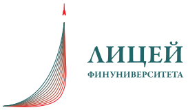
Новая архитектура профильного образования
От академической базы к инновациям
«Мы создаём образовательную среду, в которой ученик может проверить свои интересы на практике и увидеть связь между знаниями, профессией и реальными задачами»
Выбрать профиль — проверить себя в деле
Не линейная система «школа — диплом — профессия», а маршрут, который ученик проходит сам
- 01ЗнанияАкадемическая база
- 02ВыборПрофиль и элективы
- 03Свой проектПроверка интереса
- 04ПрактикаРеальная задача
«Наша задача — не просто помочь школьнику выбрать профиль. Мы создаём среду, в которой он может проверить свои интересы на практике и приобрести востребованные навыки»
Фундамент, у которого есть применение
Профильное обучение делает фундаментальное образование осмысленным и прикладным
Понять → применить → осмыслить
«Фундамент становится ценным, когда ученик понимает, где и как его применить. Эту связь обеспечивают элективные курсы»
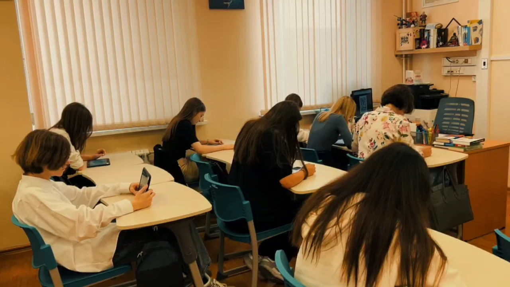
Две архитектуры — одна задача
Меняется и структура обучения, и само пространство, в котором оно идёт
Предмет → Электив → Проект
Модели и траектории: как ученик собирает свой маршрутКласс → Команда → Лаборатория
Здания и классы: где он пробует, обсуждает и создаётшкола → диплом → профессия
мультивариативная образовательная экосистема
Маршрут как конструктор
Четыре принципа новой образовательной модели
- 1НепрерывностьМаршрут — конструктор, который человек собирает всю жизнь
- 2МеждисциплинарностьСквозные проекты на стыке предметов
- 3ИсследованиеШкольники включаются в реальную исследовательскую работу
- 4ПерсонализацияИИ-инструменты помогают учитывать нагрузку каждого
Аудитория меняется вместе с задачей
Пространство становится соучастником образовательного процесса
Общий урокРабота в группах
- Классы
строгие ряды парт→ мобильная мебель и трансформация- Рекреации
транзит для прохода→ общение, групповая работа и отдых- Открытость
глухие стены→ остекление, свет и психологический комфорт
Школа должна поддерживать человека
Архитектура решает не только эстетические, но и психологические задачи
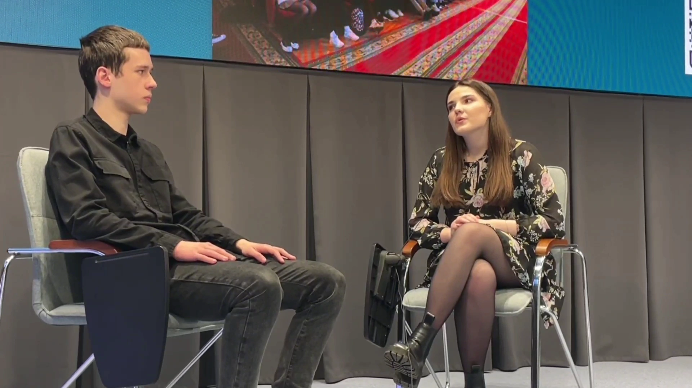
Три профиля — множество сочетаний
Элективы соединяют интересы за границами профиля
- ₽Экономика и управление бизнесомОбщество, рынок, право и предпринимательство
- АаСоциальные науки и лингвистикаКультура, язык и гражданская зрелость
- ⌘Инженерия данныхИИ-грамотность, разработка и инженерное мышление
За цифрами — люди, за идеей — решение
Социально-экономический профиль: экономика в связи с обществом
- Понимать
- Экономика на английском языке · Экономическая социология · Основы налоговой грамотности
- Создавать
- Основы предпринимательской деятельности: от идеи и правовых основ до бизнес-плана
- Объяснять
- Деловая коммуникация · PR и реклама · Деловой английский язык
Человеческое ценно в эпоху технологий
Гуманитарный профиль: культура, язык и гражданская зрелость
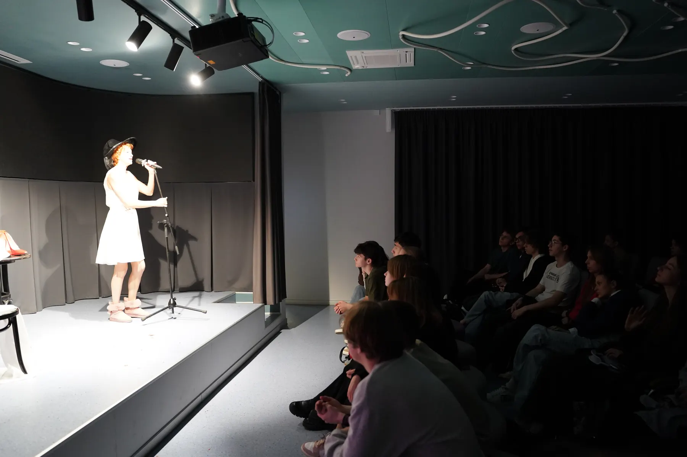
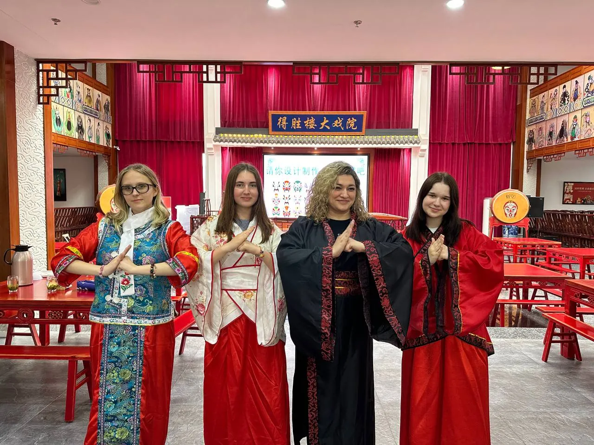
«Ценным становится способность понимать другого и вести честный диалог»
От ИИ-грамотности к авторству решений
Технологический профиль: не «нажатие кнопок», а инженерное мышление
- 01Понять ИИВозможности, ограничения, этика и право
- 02Создать инструментВайбкодинг и разработка ИИ-агентов
- 03Проверить в проектеПрототип, аналитический продукт или цифровой сервис
«Ученики должны становиться не пользователями технологий, а авторами решений»
Идея получает форму
Инженерный практикум и 3D-моделирование
- ЗамыселСформулировать задачу
- 3D-модельФорма, текстуры, визуализация
- ПрототипСконструировать и испытать
Конструирование · 3D-печать · техническая механика · начальная робототехника
Профессии живут на пересечениях
Одна профессиональная задача требует знаний сразу нескольких профилей
Элективы позволяют ученику собрать собственную комбинацию интересов и компетенций
Свой вопрос, свой вклад, свой результат
Индивидуальный проект: от вопроса до защиты
- 01Поставить задачуЧто я исследую и зачем это нужно
- 02Выбрать методНа каких данных и как проверю идею
- 03Создать и защититьЧто получилось и в чём мой вклад
Знания работают в реальной ситуации
Практико-ориентированность и партнёрство
- Бизнес-планы
- Переговоры и презентации
- Кейсы по рекламе и PR
- ИИ-агенты и цифровые прототипы
- Экономические тексты на английском
- Налоговая грамотность вместе с ФНС России
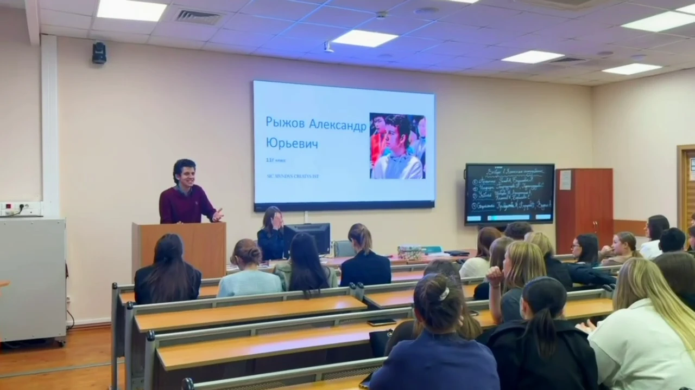
Рядом наставник — впереди выбор
Педагог становится организатором маршрута и партнёром в исследовании нового
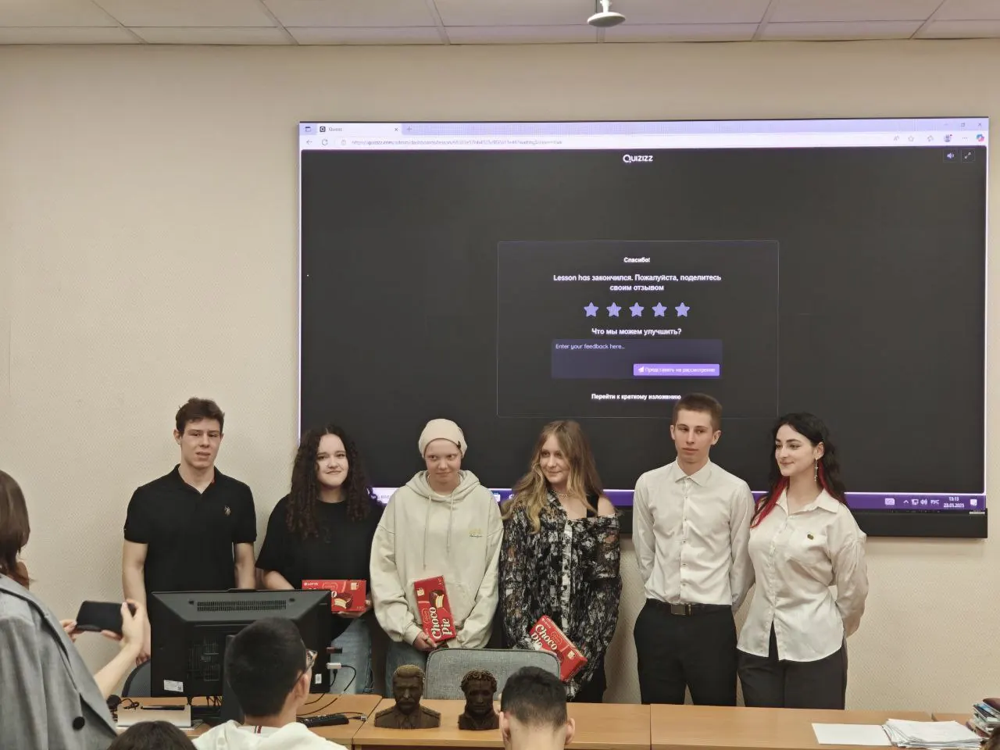
Образ выпускника
- Академически подготовлен
- Финансовая и цифровая грамотность
- Русский и английский в деловой коммуникации
- Умеет работать в команде и презентовать идеи
- Понимает последствия решений
- Открыт к непрерывному обучению
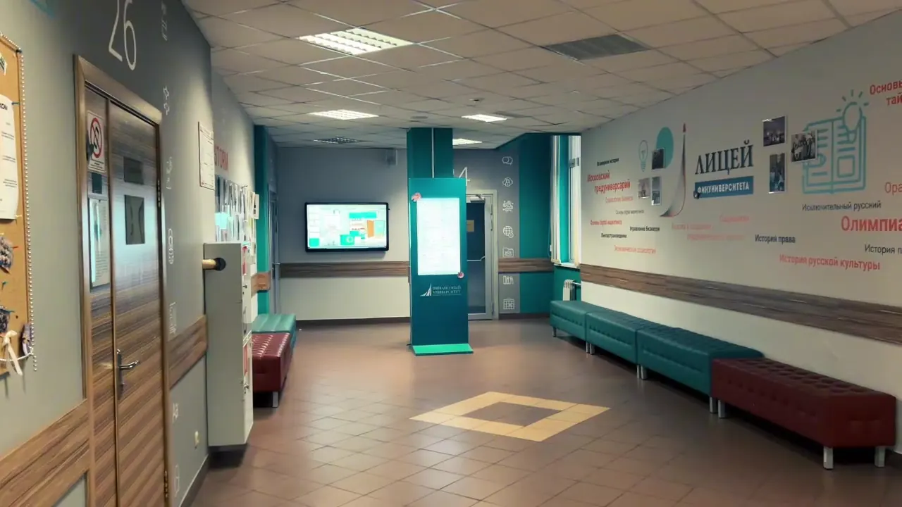
Пространство включается в обучение
Исследовать. Создавать. Обсуждать. Представлять.
Каждой задаче — свой образовательный сценарийИнформация встречает ученика
Цифровая зона первого этажа: единое информационное пространство лицея
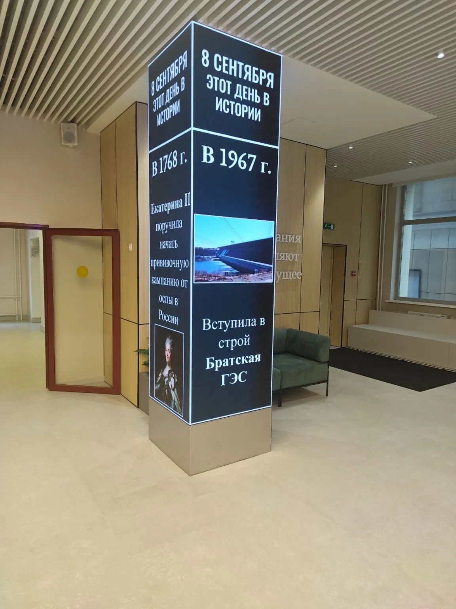
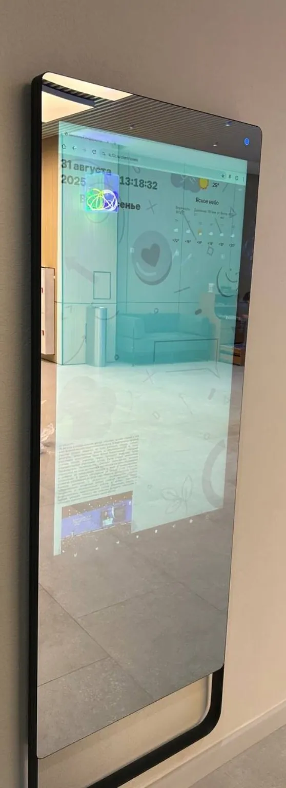
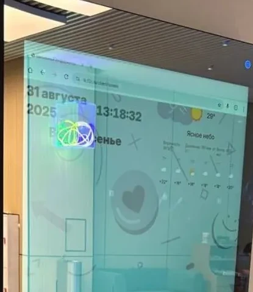
Цифровые поверхности → актуальная информация → участие
От замысла к собственному голосу
Студия звукозаписи
Идею важно уметь объяснить
TED-студия: изогнутый LED-экран, суфлёры и микрофоны
Оказаться внутри изучаемой темы
Открытый мир: изображение сразу на трёх стенах
VR: то, что трудно показать на доске
Иммерсивные уроки и виртуальные лабораторные работы
VR-урокМодель, проба и обсуждение: биология, физика, история и междисциплинарные проекты
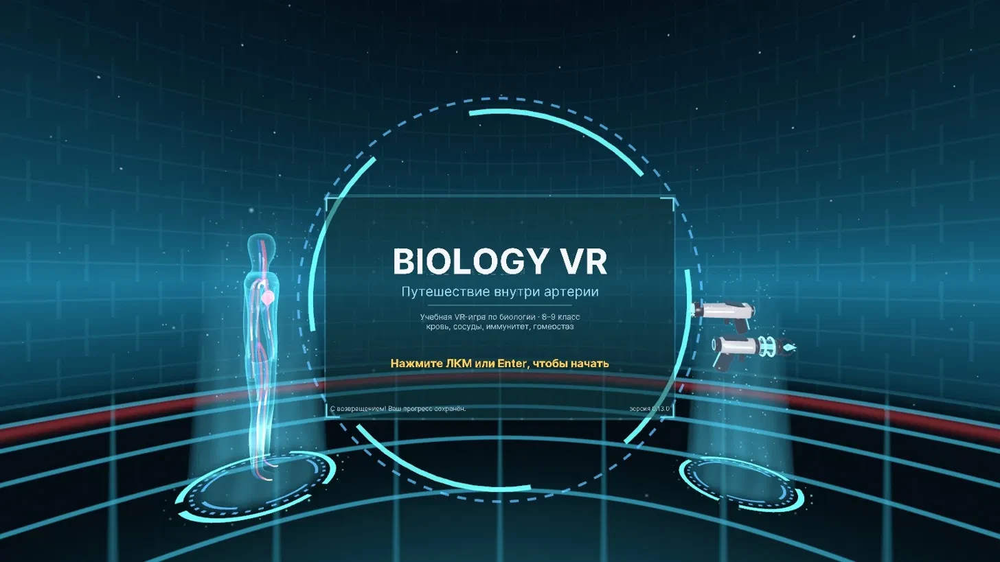
Лаборатория ИИ: среда для решений
Аудитория 44
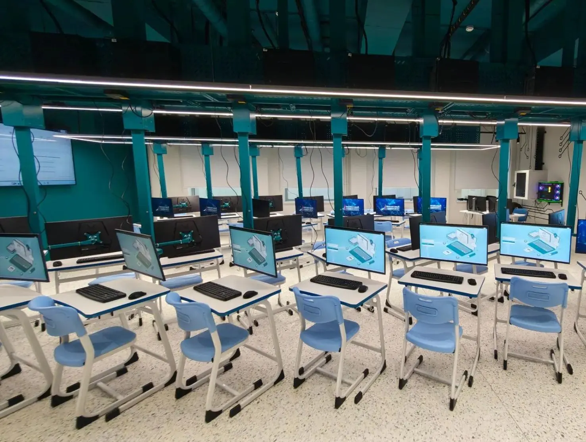
- 30посадочных мест с ПК и QHD-мониторами
- ИИпрограммирование, LLM, API, агентные и мультиагентные системы
- ↕мониторы на моторизованных потолочных кронштейнах
Рабочее место освобождает пространство
Мониторы поднимаются к потолку — аудитория готова к VR-уроку или ИТ-полигону
- Урок за компьютером
- Мониторы уходят вверх
- Свободная рабочая зона
Видео ускорено в 2,5 раза
Локальная обработка и аналитика
Сервер-оркестратор аудитории 44 работает внутри лицея
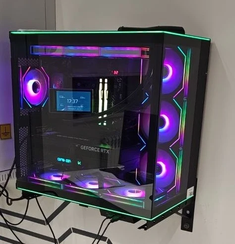
Сервер-оркестраторЭкран мониторинга, ускорено в 2,5 раза; личные данные скрыты
- Обработка онлайн-уроковлокально, с помощью LLM
- Аналитикасводки по классам, оценкам и пропускам
- Мониторинг ЭлЖурасостояние сервисов на одном экране
Обучение продолжается за пределами урока
Коворкинги и переговорные
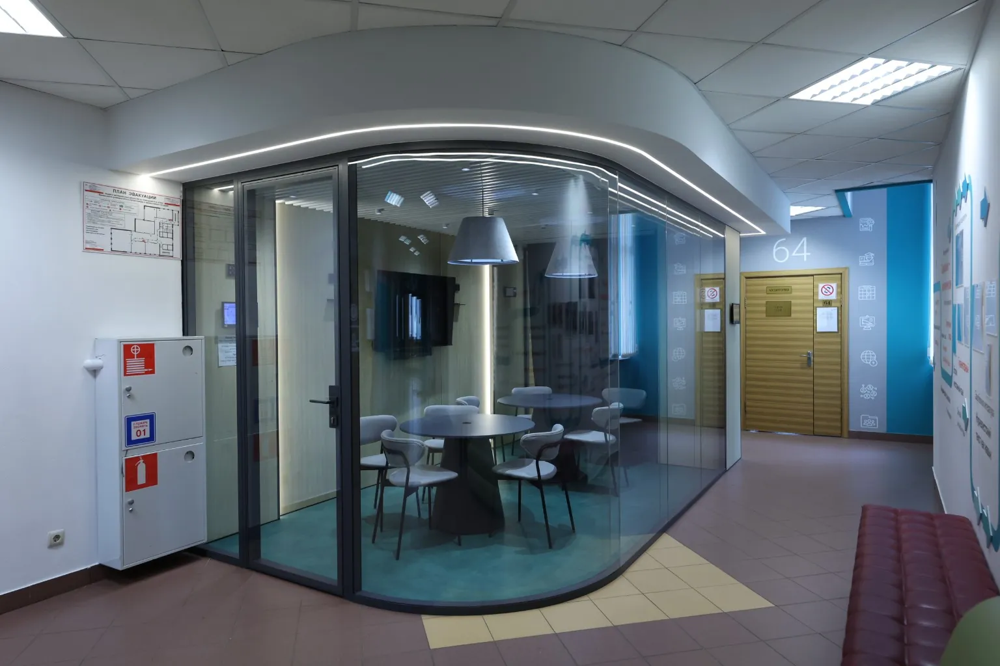
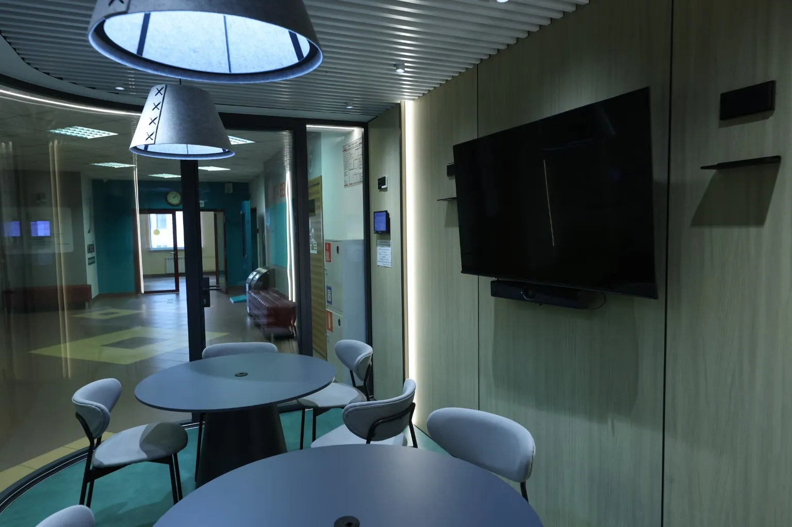
- Подготовить проект и обсудить решение
- Урок с малой группой или онлайн
- Климат, свет и звукоизоляция
У каждого элемента — своя роль
Повседневная цифровая среда работает на единый ритм учебного дня
- ИнформаторыСенсорные точки доступа: расписание, события, викторины и короткие задания
- Школьные звонкиПрограммируемое расписание сигналов, оповещения и сопровождение событий
- Информационная инфраструктураЦентрализованный контент и общий доступ к цифровой среде лицея
Второй корпус: пространство возможностей
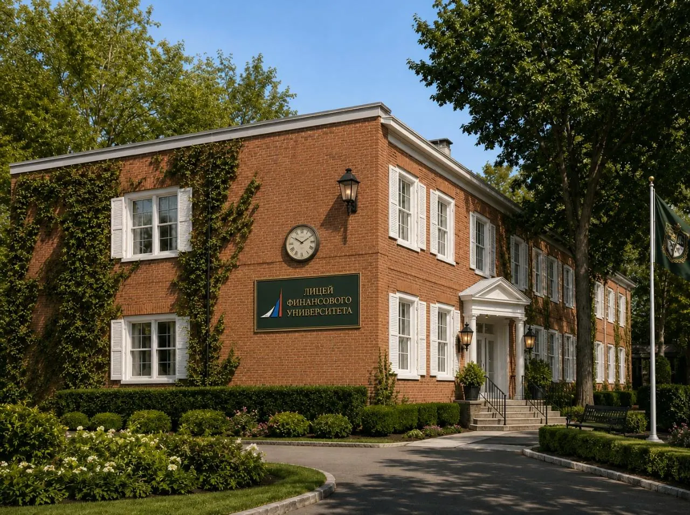
Учёба, общение и самостоятельная работа в одной среде
Аудитории и рекреации складываются в общую образовательную среду
Урок ↔ Проект ↔ Общение
Изображение — эскиз концепции, не фотография готового зданияОдна среда — разные сценарии
Эскиз концепции зала второго корпуса
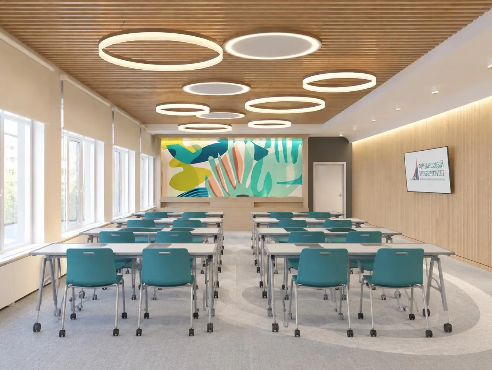
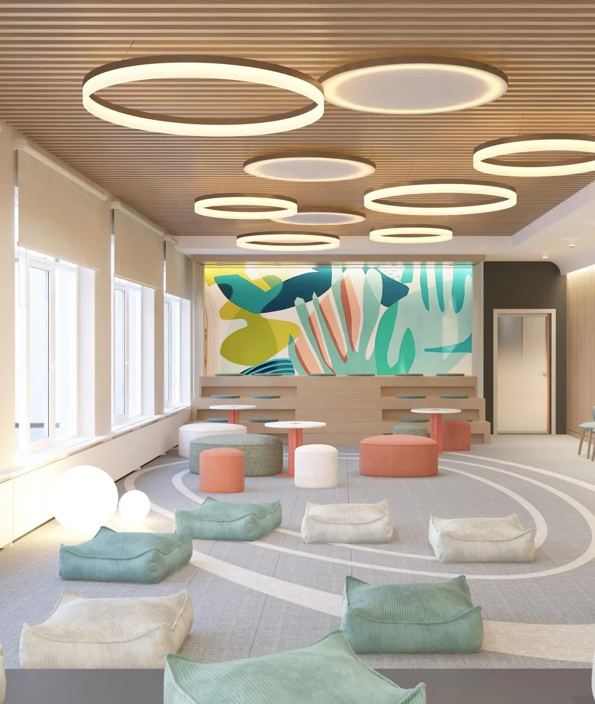
Не угадать будущее — начать его создавать
- 01ФундаментПрочные знания
- 02ВыборСвоя комбинация
- 03ПроектСобственный результат
- 04БудущееГотовность учиться
«Новая архитектура профильного образования — это архитектура возможностей. Мы создаём лицей, в котором ученик может не только узнать о будущем, но и начать создавать его уже сегодня»